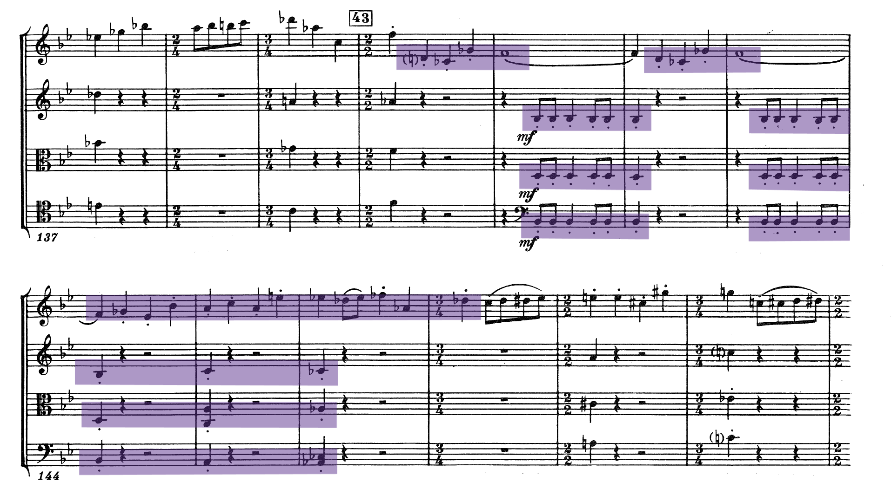
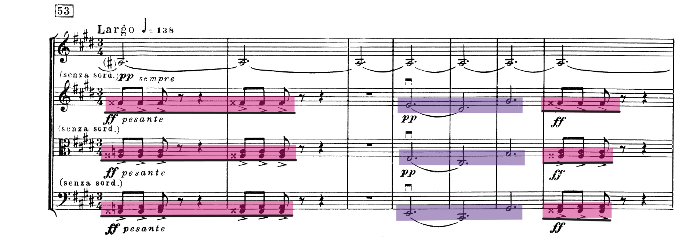

第八号c小调弦乐四重奏导赏
背景
1960年夏，肖斯塔科维奇以苏联杰出艺术家的身份，为反映德累斯顿大轰炸的苏联电影《五天五夜》创作配乐。他在配乐时，仅花了三天时间（7月12日-7月14日）便完成了这部弦乐四重奏。它的创作背景和意图最初被认为一目了然——作者本人在标题下写道：“献给法西斯主义战争受难者”，同时在1960年9月24日的《消息报》中刊登了对肖斯塔科维奇的采访：“我在与德累斯顿的当地居民聊天中得知，这些人都是在疯狂的轰炸中得以幸存的，从他们悲伤绝望的语气中，我感受到了那是多么可怕的经历。为电影配乐的这几天，影片里的场景和现实悲惨的情景把我包围了，这促使我产生了新的音乐灵感，在这三天的工作中，我还同时完成了一部新的弦乐四重奏的曲谱，这部作品要献给那些在战争中牺牲的人们。”——这一切似乎都证明这部弦乐四重奏仅是一部反法西斯的作品，表达了作者对战争和法西斯主义的憎恶。但是，在作曲家给好友写的信里面，他又表达了创作这部曲子更深一层的的动机：“有时我想，如果我在某时一命呜呼，未必有人能专门作曲来寄托对我的哀思。因此，我决定自己为自己先写这么一首乐曲，甚至可以在封面上写道，‘为纪念这首四重奏的作者而作’。”所以，这部弦乐四重奏同时也是一部具有自传性质的作品，表达了作曲家在那个特殊的年代压抑、恐惧、焦虑、苦闷的心情。
浅析
前排叠甲声明：本人不是音乐相关专业出身的，水平和精力有限，肯定会有知识性的不足，相关错误还请多多包涵，能友善地指出来那就更好啦！
整体结构和特色
这部弦乐四重奏由五个乐章组成，中间不间断演奏：
- 第一乐章：广板 (Largo)
- 第二乐章：很快的快板 (Allegro molto)
- 第三乐章：小快板 (Allegretto)
- 第四乐章：广板 (Largo)
- 第五乐章：广板 (Largo)
这部作品开篇就用了肖斯塔科维奇的签名动机——D(D)S(Eb，德国音乐符号中记作S)C©H(B，德国音乐符号中记作H)并贯穿所有乐章。同时，这部作品还体现了肖斯塔科维奇作品的另一个特征：“自我引用乐段”。他在这部作品里巧妙地融合了自己的《f小调第一交响曲》开头动机、《e小调第二钢琴三重奏》末乐章的一个主题、《降E大调第一大提琴协奏曲》开头主题和《姆岑斯克县的麦克白夫人》第四幕女主人著名唱段等多个乐段。
第一乐章：三部曲式
第一乐章的开头由大提琴在低音部拉出“D-Eb-C-B”三个音，随后紧接着由中提琴、第二小提琴、第一小提琴在不同声部上拉出这段旋律，形成密接合应。缓慢的速度和不和谐的音程（D-Eb和C-B都是小二度）营造出压抑的氛围。

第一乐句终止后引入了《f小调第一交响曲》开头的动机——但和第一交响曲营造的氛围完全不同，第一交响曲在小快板(Allegretto)的速度下，用巴松、小号等乐器演奏这段旋律，和附点节奏一起共同营造了神秘的氛围；而在这部弦乐四重奏里，用更慢的速度演绎相同的旋律，却营造了低沉悲伤的氛围，仿佛置身于天气阴沉葬礼上，周围有乌鸦盘旋。
DSCH动机过渡之后便是一串下行半音阶，诉说着作曲家心里的悲伤与不安。随后，大提琴在低音部再次奏响DSCH，然后一直保持着C音，同时高音部的两把小提琴保持着旋律的进行，这样便在悲伤的氛围里更增一分紧张——紧张着随时都有可能来的灭顶之灾。
低落的旋律盘旋了一会后，第一小提琴引入了新的主题，整个乐章便进入了第二部分。首先第一小提琴的旋律色彩似乎明亮了一些。他尝试着让这种光芒持久点——但下行的旋律似乎在暗示着这种努力是徒劳的。下行后又回到了第二部分开始的E音，这次的旋律在C大调上尝试上行——但插入的降E却增添了一抹浓重的悲凉色彩。第一小提琴在不断地尝试着明亮昂扬，但第二小提琴的旋律依然沿袭着之前的悲伤，同时中提琴和大提琴保持的音依然营造着紧张苦闷的氛围。最后，第一小提琴再次奏响“DSCH”（同时伴随着渐强的记号），代表着它尝试塑造的泡沫彻底破碎。挽歌式的旋律在不同声部交替出现，不停盘旋。
第一小提琴和第二小提琴再次拉响“DSCH”——于是我们进入了这篇乐章的第三部分。这一部分是第一部分主题的再现，也和第一部分一样出现了慢版的《第一交响曲》动机。最后，在第二小提琴、中提琴和大提琴合奏的长音升G中（同时这里的升G有种暴风雨前的躁动感！），我们迎来了第二乐章。
第二乐章：奏鸣曲式
稍微吐槽一下某社长：第一遍问他是不是奏鸣曲式时他说成二部曲式了……后来他自己发现问题了。现在已经改过来啦
第二乐章由升g小调开始，整个乐章的调性在升g小调、c小调等多个调性间切换。主部主题动机伴随着极快的速度和“ff”甚至“sfff”的强度，给人极度焦虑扭曲的感觉。该乐章第一部分的前半段大量采用了半音阶音级：先是第一小提琴不停地半音阶上下行，然后一个“DSCH”四个音的过度，半音阶的滚动转移到了中提琴和大提琴，第一和第二小提琴则用下弓和双音进行配合——渲染了焦躁扭曲的情绪。同时随处可见的重音记号以及“ff”“sf”记号更是加重了这种情绪。
突然，又是DSCH在不同声部上的呈现——和第一乐章的开头很像，但这次和第一乐章的缓慢与压抑截然不同，是一种焦虑和扭曲——用极快的速度，在几个声部的来回呈现后又在高音部不停地用很强的力度刮擦着你的耳膜，像是肖斯塔科维奇在那个年代里愤怒的呐喊和控诉，表达自己对强权的永不屈服。紧接着是对本乐章开头的主题动机进行再现与变奏，同时巧妙地融入“DSCH”在其中；最后高音部“DSCH”的反复，结束了这篇乐章的第一部分。

副部由c小调开始，出现了该乐章的第二个主题动机，同时该动机引用了作曲家本人的《第二钢琴三重奏》末乐章开头的主题动机。高音部分反复着这个动机，而中音部分和低音部分出现了大量三连音，伴随着“fff”的出现，整篇乐章的情绪似乎在这一刻达到了顶点！在这里，肖斯塔科维奇的内心一览无余：在强权压迫下，他焦虑、恐惧却不愿屈服。可是那种环境，他只能用自己的音乐来发泄这些情绪，多余的话他一个字都不敢说。

该动机短暂地结束了一阵子，进入展开部。中间高音区的半音阶滚动似是肖斯塔科维奇内心孤独恐惧的真实写照。又出现了“DSCH”——不过这次主要是低音区演奏这段动机，高音区伴以另一种旋律来反复渲染焦虑、恐惧、扭曲甚至充斥着血腥的暴虐氛围。
伴随着第一个主题动机的再次出现，调性又转回了升g小调：这里是再现部，更增焦虑和暴虐。后又转入c小调，“DSCH”再现，但在第二次“DSCH”出现时，力度却突然从强变弱——强度的突变渲染了更深一层的恐怖，就像你向同门吐槽导师却突然发现导师就在你身边时一样。但这种情绪还是无法抑制——渐强的符号说明了一切——“ff”的力度下再次奏响第二个主题动机，不过这次换成中音和低音部演奏这个主题动机，高音部则不停地演奏着三连音——由升C-E-G-A上行再下行所组成的三连音。最后在终止式上，这个乐章的结束和弦是A-升C-E-G——是g小调的重属和弦，并没有落回主调性c小调上，给人意犹未尽之感。
第三乐章：三部曲式的圆舞曲
乐章的开始是一个g小调的引子段落，第一小提琴又引入了“DSCH”，而第二小提琴的颤音像警哨一样响在听者的心中。随之而来的便是带着犹太风格的主题动机。犹太风格的音乐具有常常变换节奏和调式、旋律以小音程进行等特点。~~但讲真，不是什么民族歧视，我觉得那段听起来有点鬼鬼祟祟的。~~依旧是不断重复的“DSCH”——但D音都重复了一次——且跟随着跳跃的半音阶下行、第二小提琴的颤音和中提大提的三拍子圆舞曲节奏，更给人诡异、不安的感觉，似是有什么看不见的危险在边上。

这一段结束后又引入了新的主题动机：上半音级、三连音和拨弦，还是那么诡异，令人心里发毛。这个动机短暂地出现了一会便切回了原来的犹太风格主题动机，但原来的动机也只出现了一下，便由大量不和谐的音代替。随后又是“DSCH”——这个动机几乎无孔不入——引入了另一个主题动机，同时也是他《降E大调第一大提琴协奏曲》第一乐章里开头出现过的主题动机。这个动机里第二小提琴、中提琴和大提琴合奏的几个短促的跳音，笔者认为可能是第四乐章里“叩门动机”的雏形。



紧随其后一段诡异的、迷离的同时也是令人毛骨悚然的半音阶，让笔者联想到《1984》里那个人人自危的极权主义社会。在那里，监控遍布各地，可能随便一位看起来面善的老头就是“思想警察”。每个人都小心翼翼的，生怕说错了话被捉到把柄，然后被关进监狱，送到101房间。扯远了。这段半音阶里，大提琴同时在拉着主旋律——旋律柔美却悲伤，像一个住在过去的人追忆着似水年华。最后是之前出现过的三个主题动机的再现，似是将死之人对过往的总结，但很可惜，过往千疮百孔，痛苦不堪。最后的16小节组成本乐章的尾声，和开头的引子遥遥呼应。整个乐章的调性在g小调和c小调之间切换，最后在长长的、很弱（谱面符号：pp）的升A中结束。
第四乐章：回旋曲式
这个乐章是回旋曲式的结构，有三个主部和两个插部。
以升c小调开始，开头便是三个重音演奏的“叩门动机”——在那个“大清洗”的年代，克格勃不知何时便会敲响你家房门。每个人都在提心吊胆的活着。有一个地狱笑话是这么说的：两个克格勃因为星座的问题争吵不休，于是同时驱车前往一位天文学家的房子打算请教那位天文学家。天文学家看到他们，以为是来逮捕自己的，于是从家里跳了下去，自杀身亡。克格勃见状只能放下争论，开车离开。同时这里又引用了第一大提琴协奏曲开头的四音动机——G(G)E(降F)H(降C)B(降B)。后两个音小二度的不和谐音程本身就非常紧张，重击的叩门声更加剧了这种感觉，似乎随时随地你都可能被克格勃找上门然后被处决。
之后是一段插部。这一段的情绪色彩似乎并没有刚才那样的激烈紧张。刚开始，第二小提琴、第三小提琴和大提琴缓慢拉出一段改编自俄罗斯葬礼歌曲《被囚的痛苦》的旋律，但随后第一小提琴加入的长音却又给这层肃穆庄严蒙上了紧张的色彩，下一场情绪爆发正在酝酿……肖斯塔科维奇的一生何尝不是被苏联高压政治囚禁的一生呢？
GEHB动机和叩门动机又把旋律拉回了主部。叩门声重复了两遍，签名动机将旋律引入了第二个插部，这个插部的主旋律改自苏联革命歌曲《光荣牺牲》。第一大提琴拉着《光荣牺牲》的旋律，而第二小提琴、中提琴和大提琴则拉着长音，整体听起来似是长长的悲叹，哀悼死于战争的百姓们，同时也哀悼自己。


这段插部的后面，大提琴突然在高音部分拉出了《姆岑斯克县的麦克白夫人》里的唱段：《谢辽沙，我的爱人》。这部歌剧对肖斯塔科维奇的人生轨迹影响重大：他差点因为这部歌剧丢了性命。《真理报》严厉批评这部剧，称其为”是混乱而非艺术“，他本人也被批成了”人民公敌“。当时第四交响曲已经写出来了，但受到了这部剧的牵连，无法在公开场合演奏。一年后，他靠着《d小调第五交响曲》翻案。


最后GEHB和叩门动机又把旋律拉回了主部，而DSCH动机则把音乐引向了末乐章。
第五乐章：二部曲式
最后一个乐章又是较慢地广板，由低音部用DSCH这个签名动机引入，同时高音部演奏着主旋律。然后，签名动机给到中音部，低音部拉着主旋律——签名动机又到了高音部（第二小提琴），中音部拉着主旋律——最后是第一小提琴接过签名动机，第二小提琴拉着主旋律。签名动机和主旋律依旧在不同声部里游荡，调性也在c小调、g小调和升c小调间切换。主旋律就像一只折了翼的鸟，在空中挣扎盘旋，却逃不过越飞越低的结局。一段和第一乐章一模一样的密接合应，然后又是第一乐章里出现过的第一交响曲片段，再是之前的主旋律——似是对整个乐章的回望，又可能是对已经走过的人生、已经经历的历史的回望。结束时的长音，似一声轻轻的叹息——那些都过去了，书也该关上了。
整体上看该乐章并没引入新的材料，它和第一乐章遥遥呼应，同时又升华了本部作品的主题。
结语
肖斯塔科维奇和他所处的年代已离我们远去，但透过他的作品，我们却能真真切切地看到那个年代对一个活人的摧残。高压极权下，肖斯塔科维奇感到扭曲和煎熬，这份扭曲又通过他的作品传达给了听众。他不是天生的战士，他也需要表面的妥协换取更大的生存空间；但他的内心，绝不麻木和屈服。他的作品是诚挚的、冷峻的，和他的面相十分相似：一张孩子气的脸，一双大大的眼，还有冷峻犀利的眼神。
一份特殊的声明： 这篇文章同时是为浙江大学古典音乐协会写的导赏推文，希望大家到时候能多多关注浙大古协公众号谢谢~
以及感谢古典音乐协会各位前辈的帮助！